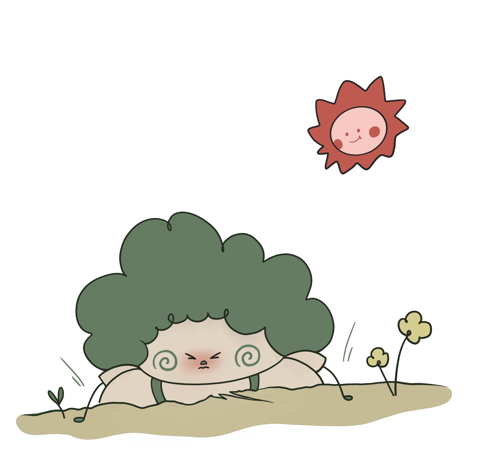
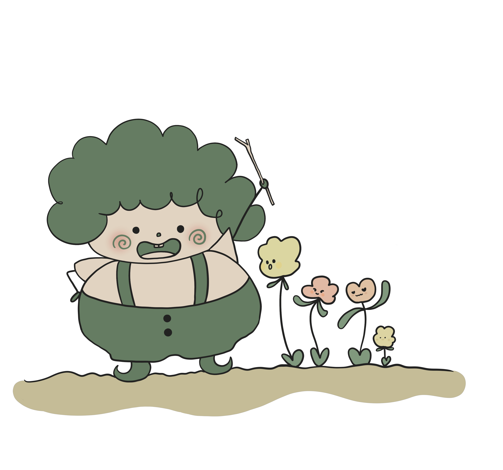
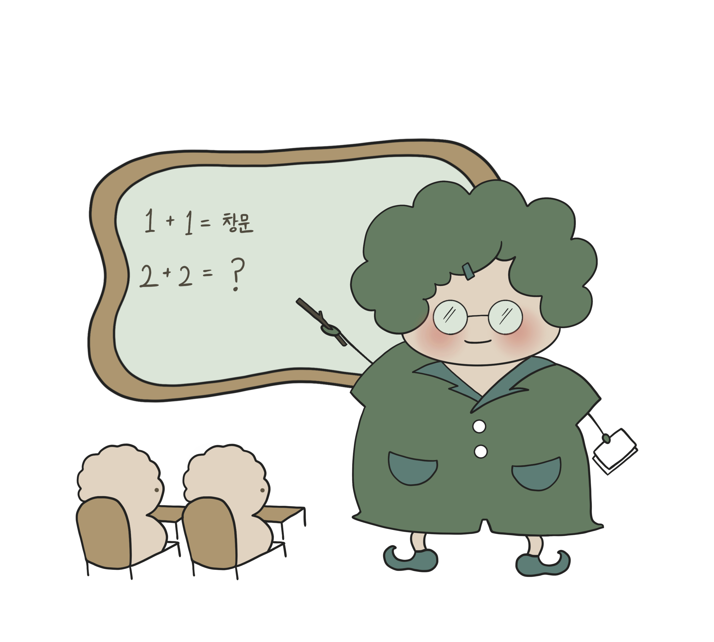

나는 봄에 피어나는 새싹과 같아요.
새싹은 아주 여리지만 땅을 뚫고 나오는 강력한 힘을 가졌지요.
그래서 저는 스테미너가 아무 많이 넘친답니다.

나는 추진력도 아주 아주 강해요.
새싹이 자라는 것처럼 무엇을 키우는 것을 잘한답니다.
그리고 목의 성질을 가장 많이 대표하듯이 종이 또는 섬유에 관련된 일을 잘 한답니다.

또한 포용력이 좋아 교육이나 육영사업도 적성에 정말 잘 맞는것 같아요.